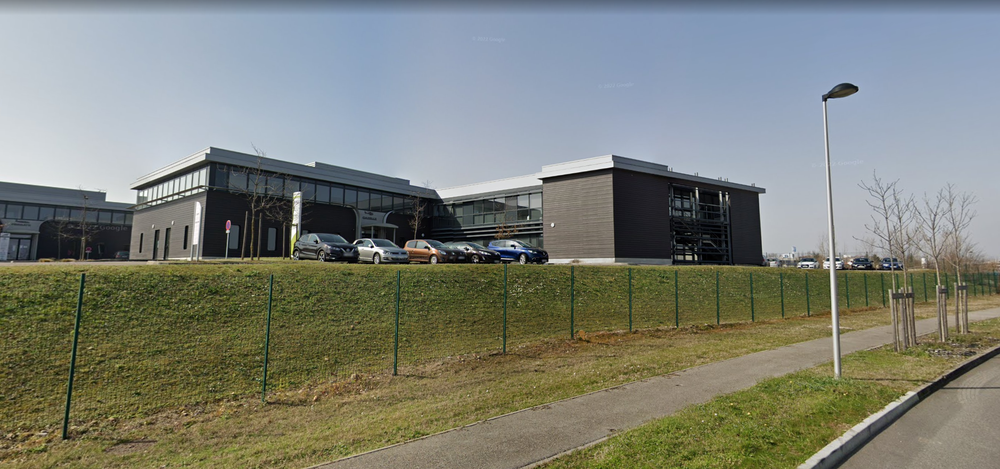

Dans cette section vous trouverez tous les informations concernant mes différentes expériences professionnelles.
Stage en BTS SIO 1ère année
- Dates : 12 mai au 27 juin 2025
- Entreprise : Lycée Philibert Delorme, l'Isle d'Abeau (38)
- Service : Service informatique du lycée
- Tuteur : M. Louis GILLET, responsable du service informatique du lycée et professeur de SNT, NSI et SI.
- Missions :
- Maintenance préventive et corrective des installations numériques du lycée.
- Remplacement de matériel informatique.
- Mise à jour sur des postes informatiques et des inventaires réseau.
- Voir mon journal : Journal

Présentation de la structure d’accueil
J’ai effectué mon stage au lycée Philibert Delorme, situé à L’Isle-d’Abeau (Isère), du 12 mai au 27 juin 2025. Il s’agit d’un établissement public d’enseignement secondaire proposant également plusieurs formations en BTS (GTLA, PME et Bioqualité).
Durant cette période, j’ai intégré l’équipe informatique du lycée, chargée de la gestion et de la maintenance du parc informatique. J’ai été placé sous la supervision de M. Louis GILLET, responsable informatique de l’établissement et mon ancien professeur de NSI. J'ai été recruté dans l'objectif de réaliser un long travail d'inventaire que M. GILLET voulait effectuer depuis longtemps, et dans une aide à l'assitance pour la gestion des pannes informatiques.
Présentation des missions réalisées
Parmi les premières missions qui m’ont été confiées figurait la réalisation d’un inventaire complet des prises réseau et des versions de Windows installées sur les ordinateurs de toutes les salles de classe. Cette tâche nécessitait de me rendre dans chaque salle, de relever le numéro de chaque prise réseau, l’appareil qui y était connecté, ainsi que la version du système d’exploitation du poste. Tout au long de mon stage, j’ai tenu à jour un journal de bord sur Excel, permettant de suivre l’avancement de mes différentes missions.

Voici un exemple de prises que je devais relever.

Voici un exemple de panne que je devais régler.
J’étais également chargé de gérer le gestionnaire de tickets de l’établissement. Lorsqu’un enseignant ou un membre du personnel signalait une panne ou un dysfonctionnement, j’intervenais pour résoudre le problème. Les interventions ont été variées : remplacement de matériel défectueux (souris, claviers, écrans, câbles Ethernet ou vidéo), installation de postes informatiques pour le personnel administratif, mise à jour de logiciels, et remplacement de barrettes de RAM.
Aperçu du logiciel de gestion des tickets.

Les tickets s'affiche dans l'ordre chronologique et sont triés en fonction de s'il s'agit d'un ticket informatique ou d'un ticket technique.

L'application de gestion des tickets contient également un plan de toutes les salles avec les informations matériels des différents postes.
En fin de stage, j’ai participé à la préparation du renouvellement du matériel informatique : j’ai procédé à l’évacuation d’anciens ordinateurs pour permettre l’installation des nouveaux postes reçus dans le cadre de la dotation 2025. J’ai ensuite déployé la nouvelle image ISO de Windows 11 sur les machines encore sous d’anciennes versions. Enfin, avec M. GILLET, nous avons réorganisé les baies de brassage, en nous appuyant sur les relevés effectués lors de mon inventaire initial.
Processus d'installation des images ISO W11 sur les PC via l'amorcage PXE du BIOS.

Étape 1 : On appuie sur la touche F11 du clavier afin d'obtenir ce menu, puis on choisit la ligne "Network 1: Realtek PXE"

Étape 2 : Ensuite il faut choisir l'OS de l'image que l'on souhaite installer. Dans notre cas, on choisit la ligne "Master Windows" car on souhaite installer une image Windows.

Étape 3 : Puis il nous faut choisir une version Windows de l'image que l'on souhaite installer. Dans notre cas, on choisit Windows 11.

Étape 4 : Nous arrivons ensuite sur l'écran de Microsft Deployment Toolkit. On appuie sur Ok.

Étape 5 : Ensuite on entre son identifiant et mot de passe de session.

Étape 6 : Puis on choisit l'image que l'on souhaite installer. Dans notre cas, c'est la Dotation de 2025.

Étape 7 : Enfin on rentre quelques informations, tels que le nom du PC et le domaine. (Dans mon cas je ne devais que donner un nom au PC, le reste était déjà pré-rempli).
Voici un aperçu des baies avant la réorganisation.
Cliquez sur les baies pour voir la différence après la réorganisation.


J’ai également réalisé diverses tâches annexes, telles que la réparation de simulateurs de chariot élévateur et d’imprimantes, la prise de mesures et de photos pour l’installation de nouveaux vidéoprojecteurs interactifs (VPI), la mise à jour des plans des salles (prises réseau, matériel, position des postes) ainsi que le rangement et le tri du local technique LTSE.
Le principal défi de ce stage a été la gestion autonome de mon travail. Après m’avoir confié mes missions principales, M. GILLET m’a laissé la liberté de m’organiser et de planifier mes interventions. Cette expérience m’a permis de développer mes compétences en organisation et en autonomie, tout en découvrant le déploiement d’images ISO via le démarrage PXE du BIOS.
J'ai également découvert la technologie PatchSee System, qui permet, grâce à une "PatchLight" et des câbles Ethernet "PatchSee" de repérer rapidement n'importe quel câble dans une baie.

Câble Ethernet "PatchSee"

PatchLight

On emboite et éclaire la PatchLight à l'arrière de l'une des extrémités du câble PatchSee.

L'autre extrimité du câble PatchSee s'allume.

On repére instantanément notre câble dans la baie !
Conclusion
En conclusion, ce stage s’est révélé très formateur. Il m’a permis de mettre en pratique les connaissances acquises au cours de ma première année, d’enrichir mes compétences techniques et de confirmer mon intérêt pour l'informatique, via le métier de technicien de maintenance.
Ce projet m'a permis de mobiliser plusieurs compétences du référentiel E5, notamment :
- (1) La gestion du patrimoine informatique de l'entreprise, via l'inventaire que j'ai effectué et le déploiement des images Windows 11.
- (2) La réponse aux incidents et aux demandes d'assistance et d'évolution, via les tickets que j'ai résolu.
- (5) La mise à disposition aux utilisateurs un service informatique, via l'installation de postes et lors de la résolution de certains tickets.
Stage en BTS SIO 2ème année
- Dates : 5 janvier au 6 février 2026
- Entreprise : INDRA SAS, Villefontaine (38)
- Service : Service informatique de INDRA SAS
- Tuteur : M. Cyril PERNIN, Chef de Projet Infrastructures Techniques du SI
- Missions :
- Réalisation de flux sur Microsoft Power Automate.
- Petites tâches d'administration système.
- Mise à jour de la documentation.

Présentation de la structure d’accueil
JJ’ai réalisé mon stage chez INDRA SAS (Industrie Nationale de Déconstruction et de Recyclage Automobile), une entreprise créée en 1985 à Saint-Priest par son fondateur Manuel Munoz et dont le siège se situe à Villefontaine. Acteur majeur du recyclage automobile en France depuis plus de 40 ans, INDRA couvre aujourd’hui la totalité du recyclage automobile. INDRA aborde aussi bien les aspects techniques du démantèlement et du traitement des véhicules que l’organisation de la commercialisation des matières et des pièces d’occasion.
Chiffres clés de l'entreprise
Organigramme de l'entreprise
Présentation de l’équipe
J’ai exercé mon stage à la Direction des Systèmes d’Informations (DSI) d’INDRA, dont le directeur est M. Vincent VOINOT. La DSI est divisée en quatre équipes :
- Une équipe DATA, chargée de la gestion des bases de données des logiciels internes d’INDRA.
- Une équipe projet, chargée du développement des outils applicatifs numériques internes d’INDRA.
- Une équipe d’assistance technique et de formation, chargée de répondre à la ligne téléphonique de la DSI et d’animer des formations internes ou externes.
- Une équipe infrastructure & réseaux, dont je faisais partie, chargée de la maintenance des outils numériques et du parc informatique.
Organigramme du DSI
Parmi ces membres, j’ai eu l’occasion de travailler avec plusieurs d’entre eux comme :
- Cyril PERNIN, mon tuteur, qui me donnait les différentes tâches à effectuer.
- Youssouf SOULAIMANA, technicien SI, membre de l’équipe Infrastructure & Réseaux, avec qui j’ai effectué certaines tâches lors de mon stage.
- Audrey PHOXAYSY, avec qui j’ai effectué certaines tâches lors de mon stage.
Présentation des missions réalisées
Inventaire
Cette première mission à INDRA consistait à réaliser l’inventaire du matériel informatique du personnel. Le but était de récupérer le numéro de série des PC et des téléphones portables professionnels ainsi que les codes IMEI des cartes SIM, sur les trois sites (Villefontaine, Vienne et Romorantin) gérés par le SI de Villefontaine.
Pour réaliser cette tâche j’ai principalement utilisé les technologies suivantes :
- Excel pour noter les informations ;
- Outlook pour l’envoi de mail ;
- Avaya Workplace, ainsi que Microsoft Teams pour les appels.
La principale difficulté pour cette mission était la disponibilité des personnes pour l’inventaire rendant la tâche longue à réaliser.
Rangement des locaux et tri du matériel
L’objectif de cette mission était de ranger le local du premier étage où se situe tout le matériel informatique (ordinateur, clavier, souris, câbles, etc.), de le répertorier dans un fichier Excel, et d’en faire le tri. Il fallait également faire le tri de tout le matériel présent dans le second local, au rez-de-chaussée, où se situe la benne pour le recyclage et les baies de brassage.
Pour réaliser cette tâche j’ai principalement utilisé Excel pour noter les informations.
Ayant déjà réalisés ces deux missions lors de mon premier stage j’ai pu les réaliser efficacement en autonomie.
Réalisation de scripts PowerShell
Première mission réellement technique puisqu’elle consistait à créer deux scripts PowerShell.
Le premier devait envoyer un mail indiquant l’expiration prochaine du compte IT Windows de la personne. Ce mail devait s’adresser au responsable de la personne ou à la personne directement, si aucun responsable n’était renseigné dans l’Active Directory. Le but de ce script était de pallier le problème d’expiration de compte IT Windows du personnel, dont la date d’expiration du compte est basée sur la date de fin de contrat.
Le second consistait lui aussi en l’envoi d’un mail indiquant les clés BitLocker manquantes des ordinateurs dans l’Active Directory. Ce mail devait s’adresser au chef de projets Infrastructure & réseaux du DSI. Le but de ce script était de pallier le problème de la perte des clés BitLocker, entraînant une impossibilité d’accéder aux données.
Après avoir créé ces scripts, il fallait planifier leur exécution (1 fois par jour pour le premier et 1 fois par semaine pour le second), grâce au planificateur de tâches de Windows.
Pour réaliser cette tâche j’ai principalement utilisé les technologies suivantes :
- PowerShell ISE pour la réalisation du script et les tests ;
- l’Active Directory pour trouver le nom des variables pour récupérer leur valeur ;
- Le planificateur de tâches de Windows pour planifier l’exécution des scripts.
La principale difficulté se situe sur le premier script, car au début le script ne fonctionnait pas correctement à cause d’un problème de lecture avec mon compte dans l’Active Directory. Dès lors que ce problème fut résolu, je n’eus pas d’autres complications.
Cette mission fut l’une des plus intéressantes car elle m’a permis de retravailler sur des scripts PowerShell et d’apprendre des choses plus poussées comme l’envoi de mail ou encore des commandes comme ‘Get-ADUser’, ‘Get-ADComputer’, etc., pour communiquer avec l’Active Directory.
Aperçu du script 'Mail-Date-de-fin-de-compte'

Aperçu du script 'Mail-Date-de-fin-de-compte'
Aperçu du script 'Vérification-clés-BitLocker'
Aperçu du script 'Vérification-clés-BitLocker'
Réalisation de flux automatisé via Microsoft Power Automate et de formulaire via Microsoft Forms
Autre mission purement technique consistant elle aussi en la réalisation de trois flux cloud automatisés sur Microsoft Power Automate, liés à trois formulaires Microsoft Forms.
Le premier consistait à récupérer les réponses du formulaire pour la création ou la suppression de compte(s) informatique, une demande d’approbation est alors envoyée au manager du demandeur pour confirmation. Si elle est approuvée, les réponses sont envoyées par mail au support IT pour création d’un ticket, ainsi qu’au service correspondant pour la création d’un compte spécifique (SAP Concur, Egencia). Dans le cas contraire, un mail est envoyé au demandeur pour l’informer du refus.
Le deuxième consistait à récupérer les réponses du formulaire de demande d’installation de nouveau matériel(s) informatique, puis envoyait à nouveau une demande d’approbation au manager du demandeur pour confirmation et ensuite envoyait les réponses au support IT pour création d’un ticket.
Enfin, le dernier flux devait récupérer les réponses du formulaire de modification ou de suppression de droits d’accès, en suivant la même logique que les deux flux susmentionnés.
J’ai également dû créer ou modifier les trois formulaires.
Pour réaliser cette tâche j’ai principalement utilisé les technologies suivantes :
- Microsoft Power Automate pour la réalisation des flux ;
- Microsoft Forms pour les formulaires.
La principale difficulté pour cette tâche était que j’étais complètement débutant sur Power Automate et qu’au début je n’arrivais pas à faire la connexion entre mon flux et un de mes formulaires. Toutefois, après avoir reçu l’aide d’un de mes collègues, j’ai pu avancer correctement sans rencontrer d’autres problèmes.
Cette mission a été la plus enrichissante car elle m’a permis de découvrir Power Automate, qui était un outil que je ne connaissais pas et que j’ai beaucoup aimé manipuler.
Aperçu du flux 'Demande d'installation de nouveau matériel'
Aperçu du flux 'Demande d'installation de nouveau matériel'
Aperçu du flux 'Demande de création ou de suppression de compte(s) IT'
Aperçu du flux 'Demande de création ou de suppression de compte(s) IT'
Aperçu du flux 'Demande de création ou de suppression de compte(s) IT'
Aperçu du flux 'Demande de modification d'accès'
Aperçu du flux 'Demande de modification d'accès'
Projet création serveur GLPI
Petit projet réalisé durant mon stage qui s’appuyait sur le travail que j’ai effectué au cours de l’inventaire et du rangement ainsi que du tri du matériel dans les locaux. Au cours de ce projet, supervisé par Cyril, j’ai travaillé avec Youssouf et Audrey. L’objectif était de créer une machine virtuelle qui accueillerait un serveur GLPI pour renseigner tout le matériel présent au sein de l’entreprise.
Pour ce qui est de la gestion de projet, nous avons fait une première réunion de présentation du projet (20/01), puis nous avons programmé deux nouvelles réunions de suivi (27/01 et 03/02).
Avec Youssouf, nous avons commencé par installer Oracle VirtualBox sur mon PC puis nous avons créé une machine virtuelle sous la distribution Linux Debian 13. Je me suis chargé personnellement de l’installation de Debian, et des paramétrages IP pour se connecter au réseau. Cependant, après plusieurs problèmes avec la machine, et sur recommandation de Cyril, nous avons retiré la machine de mon poste et nous en avons installé une autre directement sur le serveur VSphere d’INDRA. Après cela, Youssouf m’a envoyé la liste des commandes à faire pour installer Mariadb, créer la base de données GLPI, apache2 et activer l’installation de GLPI en accès web. Une fois cela fait, j’ai téléchargé l’ensemble des extensions PHP manquantes pour l’installation de GLPI.
Avec Audrey, nous avons refait un tri du matériel dans le local de stockage, puis j’ai rentré toutes les informations du Stock dans GLPI en créant nos propres actifs personnalisés avec les catégories qui nous intéressaient. Pendant ce temps, Youssouf s’était occupé de faire la connexion LDAP entre l’AD et GLPI pour faire remonter tous les utilisateurs, ainsi que les agents GLPI pour récupérer des informations sur les PC et téléphones professionnels.
J’ai également dû écrire une procédure pour l’ajout et le retrait de matériel dans le serveur GLPI.
Pour réaliser cette tâche j’ai principalement utilisé les technologies suivantes :
- Oracle VirtualBox et VMware vSphere pour l’installation des machines virtuelles ;
- Linux Debian 13 pour l’installation de Mariadb, apache2 et GLPI ;
- GLPI pour renseigner toutes les informations et créer les actifs personnalisés.
La principale difficulté a été l’installation de la première machine virtuelle sur mon poste, qui a crashé à la fin du processus d’installation de Debian. De plus on a eu un problème de connexion au réseau car on utilisait une adresse IP fournie par un serveur DHCP sur un autre VLAN et que la machine virtuelle se situait sur mon poste qui lui-même avait un pare-feu qui bloquait une partie du trafic, rendant impossible une connexion à internet. Raison pour laquelle nous sommes passés sur le serveur VMware vSphere.
Ce projet m’a permis de retravailler mes compétences sur Linux et en installation de machine virtuelle, de découvrir VMware vSphere et d’approfondir mes connaissances et ma maîtrise d’un serveur GLPI.
Conclusion
Ce projet m'a permis de mobiliser plusieurs compétences du référentiel E5, notamment :
- (1) la gestion du patrimoine informatique de l'entreprise, via l'inventaire, la réalisation des scripts et des flux Power Automate et du serveur GLPI.
- (2) La réponse aux incidents et aux demandes d'assistance et d'évolution, via les tickets que j'ai résolu avec Youssouf.
- (5) la mise à disposition aux utilisateurs un service informatique, via la réalisation de la procédure pour ajouter et enlever du matériel dans GLPI.
Aperçu du serveur GLPI
Aperçu du serveur GLPI
Petites tâches annexes
Au début de mon stage, j’ai accompagné Youssouf pour la réalisation de quelques tickets. Tels que la préparation d’un nouveau PC pour l’arrivée d’un nouveau collaborateur, la suppression et l’ajout d’utilisateurs et de droits dans l’Active Directory ou encore un dépannage pour un problème de connexion de session.
Une autre petite tâche que j’ai effectuée avec Cyril fut, dans un premier temps, la récupération d’une livraison d’antenne Wi-Fi et son stockage dans un des locaux. Puis, dans un second temps, en autonomie, la vérification du contenu de la livraison, c’est-à-dire le contrôle du bon nombre de modèles d’antenne Wi-Fi.
À la fin de mon stage, Vincent, le DSI, m’a demandé d’effectuer quelques vérifications d’informations et modifications sur plusieurs contrats B2B d’INDRA.
Stage hors scolarisation
- Dates : 22 janvier au 16 février 2024 | 11 mars au 6 avril 2024 | 13 mai au 25 mai 2024
- Entreprise : Collège du Sacré-Cœur, Anonnay (07)
- Service : Vie Scolaire
- Tuteur : Mme. Elisabeth LARDON, Coordinatrice de vie scolaire.
- Missions :
- Aide aux devoirs.
- Surveillance de la cour et des études.
- Animation du foyer.

Présentation de la structure d’accueil
J’ai effectué mon stage au collège du Sacré-Cœur à Annonay, sur trois périodes : du 22 janvier au 16 février, du 11 mars au 6 avril, et du 13 mai au 25 mai 2024. Il s’agit d’un établissement privé catholique accueillant des élèves du collège.
Durant cette expérience, j’ai intégré l’équipe de vie scolaire, composée d’éducateurs chargés de veiller au respect du règlement intérieur, à la sécurité des élèves et à la surveillance des espaces communs, tels que la cour ou les salles d’étude. J'ai été recruté dans l'objectif d'aider les élèves dans leurs devoirs et d'assister le personnel de la vie scolaire dans leurs missions.
Présentation des missions réalisées
Ma première mission consistait en la surveillance des élèves, aussi bien dans la cour pendant les récréations que durant les heures d’étude. Au début du stage, pour la surveillance en étude, j’étais accompagné par un éducateur expérimenté, puis j’ai progressivement assuré la surveillance des études en autonomie. Lors de ces temps d’étude, il arrivait que certains élèves souhaitent travailler en groupe ou obtenir de l’aide pour leurs devoirs. Dans ces cas, j’étais autorisé à les accompagner dans une salle dédiée afin de les aider dans leur travail scolaire.
Ma seconde mission concernait l’animation du foyer des élèves, ouvert chaque jour de 12 h 45 à 13 h 45. J’étais chargé de l’ouverture, de la surveillance et de la fermeture du foyer, en veillant à ce que les activités se déroulent dans le calme et le respect des règles. J’étais parfois assisté par des élèves de troisième, habituellement responsables de l’animation du lieu.
Conclusion
Ce stage m’a apporté une expérience particulièrement enrichissante sur le plan personnel. Il m’a permis de développer ma confiance en moi et d’améliorer ma capacité à communiquer et interagir avec les autres.
J’ai néanmoins rencontré certaines difficultés, notamment pour trouver le juste équilibre entre autorité et bienveillance. Il n’était pas toujours évident de se faire respecter par les élèves tout en maintenant une relation de confiance. Ma principale appréhension était de prendre une décision inadaptée, trop stricte ou, au contraire, trop permissive.
Enfin, je tiens à remercier l’équipe de la vie scolaire, qui m’a accompagné tout au long de cette expérience. Leur soutien, leurs conseils et leurs encouragements m’ont permis de progresser et de mener à bien mes missions dans les meilleures conditions.